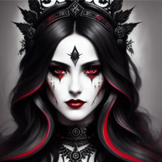

Morwyn, The Reaper of Souls
Goddess of the Death Domain
Morwyn, the Reaper of Souls, is a powerful and enigmatic goddess who holds domain over death and the afterlife in the world of Celestia. She is often depicted as a tall, robed figure with a shroud that conceals her face, symbolizing the mysterious and unknowable nature of death.
Morwyn is believed to be an ancient deity, existing since the dawn of creation, and her origins are shrouded in myth and legend. She is known to have a solemn and stoic demeanor, as she carries out her duty of guiding souls from the mortal realm to the afterlife.
As the Reaper of Souls, Morwyn is tasked with the solemn responsibility of collecting the souls of the deceased and guiding them to their final resting place. She is impartial and unyielding in her duty, treating all souls with equal measure, regardless of their deeds or beliefs in life.
Morwyn's followers are often those who seek to understand the mysteries of death and the afterlife, such as necromancers, morticians, and spiritualists. They revere her as a wise and powerful deity who holds the keys to the realm beyond, and they often perform rituals and ceremonies to honor her and seek her guidance.
Despite her somber and mysterious nature, Morwyn is not associated with evil or malevolence. She is seen as a neutral force, ensuring the natural cycle of life and death continues unabated. However, some may view her with fear or trepidation due to the inherent unknowns and uncertainties of death.
Legends and tales abound about encounters with Morwyn, with some claiming to have glimpsed her as a fleeting figure in the shadows during times of great loss or mourning. Others speak of her as a compassionate guide who offers solace to the souls she guides to the afterlife, ensuring they find peace in the beyond.
Morwyn's domain, the realm of the afterlife, is said to be a mysterious and ever-changing place, with various planes and realms that souls pass through based on their deeds, beliefs, and destinies. It is a realm that is beyond mortal comprehension, and Morwyn is believed to hold the keys to its gates, guarding its secrets with unwavering vigilance.
As a deity associated with death and the afterlife, Morwyn's influence extends across the entire world of Celestia. Her presence is felt in funerary rites, mourning rituals, and the beliefs and customs surrounding the passage from life to death. Many look to her for comfort and guidance in times of loss, while others seek to unravel the mysteries of the afterlife through her teachings.
However, Morwyn is also a deity that commands respect and caution. Her true nature and motives remain largely unknown, and many believe that she is a deity whose power and influence are beyond mortal comprehension. Her enigmatic presence adds an air of mystery and reverence to the realm of death in the world of Celestia, making her a revered yet feared figure in the pantheon of gods and goddesses.